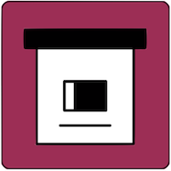

Readable for decades
Snapshots are stored as ordinary files and folders, with metadata in SQLite and JSON. You can browse the collection without depending on a hosted service.

ArchiveBoxOpen-source self-hosted web archiving
ArchiveBox saves websites, bookmarks, RSS feeds, social posts, media, source code, and research material in durable files like HTML, PDF, PNG, TXT, JSON, WARC, MP4, and SQLite.


# Docker Compose is the recommended setup $ mkdir -p ~/archivebox/data && cd ~/archivebox $ curl -fsSL 'https://docker-compose.archivebox.io' > docker-compose.yml $ docker compose run archivebox init --install -> created ./data/index.sqlite3 -> installed Chrome, wget, yt-dlp, SingleFile, readability ok listening on http://127.0.0.1:8000 $
Why ArchiveBox
Snapshots are stored as ordinary files and folders, with metadata in SQLite and JSON. You can browse the collection without depending on a hosted service.
ArchiveBox can save rendered HTML, screenshots, PDFs, WARC files, article text, headers, favicons, media, subtitles, and source repositories.
Import one URL, pipe text into the CLI, upload exported bookmarks, or schedule recurring pulls from RSS feeds and other text-based source lists.
Run it as a Docker web app, use one-off CLI commands, or automate with APIs while keeping private and public material under your own policy.
Who it is for
Save bookmarks, browser history, RSS feeds, social media, form content, videos, podcasts, music, photos, and personal knowledge collections.
Capture web pages, articles, source material, and public records while preserving reviewable copies outside of volatile platforms.
Support OSINT, social media research, AI-powered research agents, libraries, governments, and collection-building teams.
Recommended install
Docker Compose is the recommended ArchiveBox setup for the easiest install and update path, better isolation, and bundled archiving dependencies like Chrome, wget, yt-dlp, SingleFile, and readability tools.
$ mkdir -p ~/archivebox/data && cd ~/archivebox
$ curl -fsSL 'https://docker-compose.archivebox.io' > docker-compose.yml
$ docker compose run archivebox init --install $ docker compose up
$ docker compose run archivebox add 'https://example.com'
ArchiveBox can also run with plain Docker, pip, brew, deb packages, or the optional setup script. Docker Compose remains the default recommendation, especially when you want bundled dependencies and clean upgrades.
Configuration
ArchiveBox can be configured with environment variables, the archivebox config CLI, or by editing ./ArchiveBox.conf. The same configuration model works in Docker, Docker Compose, bare-metal installs, scheduled jobs, and one-off CLI runs.
Use TIMEOUT for slow networks, CHECK_SSL_VALIDITY for sites with broken certificates, PUBLIC_INDEX, PUBLIC_SNAPSHOTS, and PUBLIC_ADD_VIEW for publishing policy, and browser user-agent settings for sites that block obvious bots.
For authenticated or difficult sites, review CHROME_USER_DATA_DIR, COOKIES_FILE, CHROME_USER_AGENT, WGET_USER_AGENT, and CURL_USER_AGENT. Public archive operators should also configure instance branding and contact details with settings like FOOTER_INFO and CUSTOM_TEMPLATES_DIR.
$ archivebox config # view full config $ archivebox config --get CHROME_BINARY $ archivebox config --set TIMEOUT=240 $ archivebox config --set PUBLIC_INDEX=False $ env CHROME_BINARY=chromium archivebox add 'https://example.com'
ArchiveBox uses standard tools like Chrome or Chromium, wget, curl, yt-dlp, git, SingleFile, Readability, and article parsers. Docker bundles these dependencies for easier upgrades and better isolation; non-Docker installs can run archivebox install and archivebox --version to check what is available.
Inputs and outputs
Archive one URL at a time or schedule imports from bookmarks, browser history, RSS, JSON, CSV, TXT, SQL, HTML, Markdown, Pocket, Pinboard, Instapaper, Shaarli, Wallabag, and more.
Each snapshot can include original HTML, rendered single-file HTML, PDF, screenshot PNG, WARC, title, article text, favicon, headers, media, subtitles, metadata, thumbnails, and git clones.
Manage the same collection through the Web UI, CLI, REST API, Python API, SQLite, or the data folder itself. The tools are complementary, not separate products.
Disk layout, exporting, and security
All ArchiveBox state for a collection lives in one data folder: the SQLite database, configuration, logs, and archived content. Snapshots are organized on disk as ordinary files and folders so they can be backed up, searched, published carefully, or browsed by hand.
data/ index.sqlite3 # main metadata database ArchiveBox.conf # collection configuration archive/ 1617687755/ index.html index.json screenshot.png output.pdf warc/1617687755.warc.gz media/some_video.mp4 git/somerepo.git
Each snapshot folder includes static index.html and index.json metadata plus extractor outputs such as HTML, PDFs, screenshots, WARC files, media, subtitles, headers, favicons, article text, and git repositories.
You can export the archive index as static HTML, JSON, or CSV with archivebox list so collections can be reviewed without running the web server. Keep generated exports next to the archive/ folder so relative snapshot paths continue to work.
$ archivebox list --html --with-headers > index.html $ archivebox list --json --with-headers > index.json $ archivebox list --csv=timestamp,url,title > index.csv
If you archive private URLs, paywalled pages, unlisted media, Google Docs, or browser sessions, assume snapshot viewers may see private URLs, cookies, session tokens, headers, and page content unless you configure access carefully.
Restrict public access with PUBLIC_INDEX=False, PUBLIC_SNAPSHOTS=False, and PUBLIC_ADD_VIEW=False, then create authenticated users with archivebox manage createsuperuser.
Archived pages that execute JavaScript can make requests from the same domain as the web UI when viewed. If this risk matters for your collection, review the publishing guidance and consider disabling extractor outputs that execute archived JS when opened.
archivebox config --set SAVE_WGET=False SAVE_DOM=False
ArchiveBox can use roughly 1 GB to 50 GB per 1,000 snapshots depending on media, video, audio, and extractor settings. Tune YTDLP_ENABLED and YTDLP_MAX_SIZE for media-heavy collections.
Keep index.sqlite3 on local storage or SSD when possible. Large archive/ folders can live on NFS, SMB, FUSE, S3-backed, or HDD storage, but Docker and fileshare setups may need PUID, PGID, and root-squash adjustments. Avoid older filesystems like EXT3 or FAT for very large archives.
Ecosystem
Extractor and plugin packages used to preserve more types of content.
Download and extraction tooling for saving web content and media.
Runtime package management for dependencies used by ArchiveBox and plugins.
Event bus infrastructure for ArchiveBox automation and integrations.
Background and motivation
ArchiveBox exists because link rot, platform churn, censorship, and disappearing media routinely erase useful knowledge. The project aims to make the web content you care about viewable with common software in 50 to 100 years, without requiring ArchiveBox or a hosted replay service to understand your files.
Centralized public archives are essential, but not every page belongs in a global public service. ArchiveBox lets individuals and organizations save public or private material they can access, keep it locally or within their institution, and decide what to publish case by case.
The project differentiates itself by combining a comprehensive CLI, a self-hosted web UI, API surfaces, scheduled imports, standard output formats, and a simple on-disk data layout that remains useful without the app running.
Responsible archiving depends on your jurisdiction, your use case, and your publishing policy. ArchiveBox is a tool; operators remain responsible for handling private data, copyright, DMCA or GDPR requests, and local legal requirements.
Public instances should publish contact and removal information, avoid monetizing copied content, and review the security and publishing documentation before exposing snapshots to anonymous viewers.
ArchiveBox is a broad, self-hosted archive manager. For specialized crawling, replay, bookmark management, or research workflows, the wider web archiving ecosystem is worth knowing.
Documentation
The README and wiki cover supported sources, outputs, scheduled archiving, storage backends, authentication, security, publishing, Chrome setup, upgrades, troubleshooting, API usage, development, and the broader web archiving community.